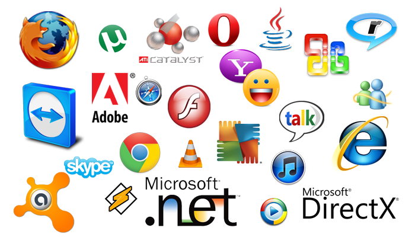

- O que é um Software?
- Tipos de software
- Processo de software:
- Sistema legado do Software:
- Custos de Software:
- Mas o que é Engenharia de Software?
- Mitos do Software:
- Atributos para um bom software:
- Categorias do processo de software:
- Validação de requisito
- Software e seus testes
- Tipos de testes
- Teste seu conhecimento
- Referências
Engenharia de Software
O que é um Software? [Subir]
Software é uma sequência de instruções escritas para serem interpretadas por um computador com o objetivo de executar tarefas específica. Para explicar melhor, todo programa que esta sendo rodado em seu computador,celular dispositivel que permite executar suas funções, é o Software encarregado por fazer a interface entre usuário e hardware, sem código binário ou linguagem de máquina.
O termo inglês "software" foi usado pela primeira vez em 1958 em um artigo escrito pelo cientista americano John Wilder Tukey. Foi também ele o responsável por introduzir o termo "bit" para designar "dígito binário".
Um dos primeiros relatos de um software desenvolvido foi registrado no século XIX. Ada Lovelace, conhecida como a primeira programadora, escreveu um algoritmo que fazia com que a Máquina Analítica fosse capaz de calcular uma sequência conhecida como Números de Bernoulli.
Tipos de software [Subir]
Software de sistema:
É o software projetado para fornecer uma plataforma para outro software. Exemplos de software de sistema incluem sistemas operacionais como macOS, Ubuntu (uma distribuição Linux) e Microsoft Windows, software de computação científica, mecanismos de jogos, automação industrial e aplicativos de software como serviço. Em contraste com o software de sistema, softwares que permitem aos usuários realizar tarefas orientadas ao usuário, como criar documentos de texto, jogar jogos de computador, ouvir música ou navegar na Web, são coletivamente chamados de software aplicativo.
Software de programação:
São as ferramentas usadas pelo programador para desenvolver novos softwares e programas. Usam diferentes linguagens de programação (C, Java, Python, Swift, etc.) e abrigam compiladores, intérpretes e depuradores, por exemplo.Os editores de texto, embora sejam softwares de aplicação também são softwares de programação, pois podem ser usados para escrever código.
Software aplicativo:
Um software aplicativo é um tipo de software concebido para desempenhar tarefas práticas ao usuário para que este possa concretizar determinados trabalhos. Esta característica distingue-o de outros tipos de programas, como os sistemas operativos (que são os que fazem funcionar o computador), as linguagens de programação (que permitem criar os programas informáticos em geral) e os utilitários (que realizam tarefas de manutenção ou de uso general).
Um software aplicativo trabalha com a execução ordenada de tarefas a fim de coletar dados e fazer a organização de informações, em outras palavras, o processamento de dados.
Algumas das funções dos softwares aplicativos são realizar cálculos, organizar e executar tarefas, processar informações, entre outros.
Processo de software: [Subir]
- É um conjunto de atividades relacionadas que levam à produção de um produto de software,seja ele desenvolvido do zero, ou extensão de sistemas já existentes.
- As atividades genéricas em todos os processos de software são:
- Especificação – o que o sistema deve fazer e suas restrições de desenvolvimento.
- Desenvolvimento – produção do sistema de software.
- Validação – verificação de que o software é o que o cliente deseja.
- Evolução – mudança do software em resposta às demandas de mudança.
Sistema legado do Software: [Subir]
São sistemas muito antigos, desenvolvidos em plataformas ultrapassadas e muitas vezes em linguagens “mortas; Foram desenvolvidos em uma época em que não existem nenhuma metodologia de desenvolvimento; São modificados continuamente para satisfazer mudanças nos requisitos do negócio e nas plataformas de computação; Muitos sistemas legados são mantidos e continuam sendo importantes para suas organizações, apesar de ser uma grande dor de cabeça para as mesmas; Não significa que sistemas legados são antigos, podem apenas executar em cima de plataformas ultrapassadas
Custos de Software: [Subir]
- Os custos de software dominam os custos de sistemas computacionais. Em um PC, os custos de software são frequentemente maiores que o custo do hardware;
- Manter um software custa mais que desenvolvê-lo. Para sistemas com uma longa vida, os custos de manutenção podem ser muito maiores que os custos de desenvolvimento;
- A engenharia de software dedica-se ao desenvolvimento de software com custos adequados.
Mas o que é Engenharia de Software? [Subir]
É um conjunto de processos, métados, técnicos e ferramentas que ajudam a produzir software com maior qualidade e com menor custo. Além de incluir o processo de desenvolvimento e atividades de gerenciamento de projetos
um engenheiro de software ao desenvolver e gerenciar softwares, além das demais atividades desempenhadas por ele, pode oferecer alguns benefícios imprescindíveis para a sociedade.
Um engenheiro de software deve acompanhar os avanços tecnológicos. Na verdade, cabe a ele estar atento às novidades tecnológicas, buscar novos métodos para desenvolver e gerenciar sistemas e aplicativos da melhor forma. E isso, com certeza, não é tarefa fácil.
Mitos do Software: [Subir]
Mitos da Gerência :
- Meu pessoal tem ferramentas de desenvolvimeto de software de ultima geração; afinal de contas lhes compramos os mais novos computadores.
- Se nós estamos atrasados nos prazos , podemos adicionar mais programodores e tirar o atrosos?
Mitos dos clientes:
- Uma declaração geral dos objetivos é suficiente para se começar a escrever programas – podemos preencher os detalhes mais tarde
- Os requisitos de projeto modificam-se continuamente, mas as mudanças podem ser facilmente acomodadas, porque o software é flexível
- Assim que escrevermos o programa e colocarmos em funcionamento, nosso trabalho estará completo;
- Mitos do profissional
- Enquanto não tiver o programa “funcionando”, eu não terei realmente nenhuma maneira de avaliar sua qualidade
- A única coisa a ser entregue em um projeto bem-sucedido é o programa funcionando;
- A engenharia de software vai nos fazer criar documentação volumosa e desnecessária que certamente nos atrasará.
- O software deve fornecer a funcionalidade e o desempenho requeridos para o usuário e deve ser manutenível, confiável e aceitável:
Atributos para um bom software: [Subir]
- Flexibilidade :Um bom software corporativo precisa ser flexível, ou seja, deve ser capaz de lidar com diferentes tipos de necessidades.
- Usabilidade:O software precisa ser de fácil utilização, principalmente porque a grande maioria dos usuários não entende de linguagem de programação.
- Eficiência:Um nível de desempenho mínimo e máximo para o software devem ser delimitados no início do projeto. Assim, é possível mapear o comportamento da solução em relação aos recursos que vai utilizar e ao tempo de resposta para o processamento. Tudo deve ser compatível com o nível que foi requerido para o produto.
- Manutenibilidade:A facilidade com que as correções podem ser implementadas também diz muito sobre a qualidade do software. Isso porque permite atualizações rápidas e pouco onerosas, evitadas pelos usuários que temem pela integridade das informações que já foram armazenadas no banco de dados.
Categorias do processo de software: [Subir]
Processos dirigidos: onde todas as atividades são planejadas com antecedência, e o progresso é avaliado por comparação com o planejamento inicial.
Processos ágeis: o planejamento é gradativo, e é mais fácil alterar o processo de maneira a refletir as necessidades de mudança dos clientes.
Requisitos do software:
Um requisito é a propriedade que um software exibe para solucionar problemas reais, é a conjuntura indispensável para satisfazer um objeto. Quando se trata de um software sob demanda, por exemplo, um requisito é uma maneira pelo qual o sistema oferecido deve fazer, ou um condicionamento no desenvolvimento do sistema.
Segundo Sommervile, os requisitos de um sistema são as descrições do que o sistema deve fazer, os serviços que oferece e as restrições a seu funcionamento. O que um sistema deve fazer são requisitos funcionais.E as restrições são requisitos não-funcionais, como desempenho, usabilidade, segurança, disponibilidade, etc.
Requisitos funcionais
um requisito funcional define uma função de um sistema de software ou seu componente. O requisito funcional representa o que o software faz, em termos de tarefas e serviços. Uma função é descrita como um conjunto de entradas, seu comportamento e as saídas. Os requisitos funcionais podem ser cálculos, detalhes técnicos, manipulação de dados e de processamento e outras funcionalidades específicas que definem o que um sistema, idealmente, será capaz de realizar. Requisitos comportamentais, que descrevem todos os casos em que o sistema utiliza os requisitos funcionais, são extraídos dos casos de uso.
Requisitos não funcionais
Os requisitos não funcionais são aqueles que não interferem diretamente no desenvolvimento do sistema propriamente dito, ou seja, não é um requisito que tem regras de negócios e, portanto, é necessário para determinar o que será feito no software. Em vez disso, os RNFs são requisitos que estabelecem como o sistema se comportará em determinadas situações.
Segundo Sommervile, esses são os requisitos que não estão diretamente relacionados com os serviços oferecidos pelo sistema a seus usuários, mas as:
- Propriedades emergentes do sistema, como confiabilidade, tempo de resposta e uso de memória.
- Restrições, como as capacidades dos dispositivos de E/S ou as representações de dados usadas nas interfaces com outros sistemas
Validação de requisito [Subir]
A validação de software é um processo que comprova documentalmente que o sistema cumpre com as funções das quais foi designado, em conformidade com as especificações dos requisitos do usuário e com a garantia de segurança e rastreabilidade de informações.
- A validação de requisitos é "o processo pelo qual se verifica se os requisitos definem o sistema que o cliente realmente quer".
- A importância da validação é devido aos altos custos de retrabalho quando é encontrado erros de requisitos nas fases mais avançadas de desenvolvimento.
Gerenciamento de requisitos do software
O gerenciamento de requisitos de software é uma atividade que exige uma atenção especial no processo de gerenciamento de um processo de desenvolvimento de software ou sistema de software. Com isso, fica claro nas afirmações feitas por vários autores das áreas de engenharia de requisitos e engenharia de software. Baseado nesta importância do gerenciamento dos requisitos Machado (2011), diz que a gerência de requisitos inclui a documentação de dependências entre os requisitos, o controle de mudanças sobre as identificações e correção de inconsistências entre o requisito e os artefatos do projeto.Podendo considerar três tarefas básicas:
- Identificação e armazenamento de requisitos
- Gerenciamento de mudanças
- Gerenciamento de rastreabilidade
Validação e Verificação (V&V)
- Verificação: Assegurar consistência, completitude e corretude do produto em cada fase do ciclo de vida do software. Estamos construindo o produto da maneira certa?
- Validação: Assegurar que o produto final corresponda aos requisitos do usuário. Estamos construindo o produto certo?
- Nessa etapa, são incluídas atividades como:
- Testes de software;
- Revisões técnicas formais;
- Auditoria de qualidade e configuração;
- Monitoramento de desempenho;
- Simulação;
- Revisão da documentação;
- Revisão da base de dados;
- Análise de algoritmos e;
- Teste de usabilidade
Software e seus testes [Subir]
Um software falha quando ele não esta de acordo com o esperado pelo usuário.Os defeitos normalmente são introduzidos na transformação de informações entre as diferentes fases do ciclo de desenvolvimento de um software.
- Defeito (fault) – passo, processo ou definição de dados incorreto, como por exemplo, uma instrução ou comando incorreto;
- Erro (error) – diferença entre o valor obtido e o valor esperado, ou seja, qualquer estado intermediário incorreto ou resultado inesperado na execução do programa constitui um erro;
- Falha (failure) – produção de uma saída incorreta com relação á especificação
Tipos de testes [Subir]
- Os testes podem ser classificados de distintas maneiras, de acordo com a literatura utilizada considera-se três estágios de teste:
- Testes em desenvolvimento;
- Testes de release;
- Testes de usuário.
Teste de Desenvolvimento
Incluem todas as atividades de testes que são realizadas pela equipe de desenvolvimento do sistema com o objetivo de descobrir falhas e defeitos.
Sommervile descreve três níveis de granularidade durante o desenvolvimento:
- Teste unitário;
- Teste de componente (ou integração)
- Teste de sistema.
Teste de Release
Sommervile destaca tambem duas diferenças importantes entre o teste de release e o teste de sistema: O teste de release deveria ser realizado por uma equipe externa ao desenvolvimento do sistema. Enquanto os testes de sistema buscam encontrar bugs no sistema, o teste de release verifica se o sistema atende a seus requisitos e se é aceito pelo cliente ou usuário (teste de validação).
Sommervile destaca três tipos de testes de release:
- Testes baseados em requisitos;
- Testes de cenário;
- Testes de desempenho.
Testes de Usuário
Segundo Sommervile, teste de usuário ou de cliente é um estágio onde usuários ou clientes fornecem entradas e conselhos sobre o teste de sistema. Esse tipo de teste é essencial, pois as influências do ambiente de trabalho do usuário têm um efeito importante sobre a confiabilidade, o desempenho, a usabilidade e a robustez de um sistema.
Sommervile apresenta três tipos de testes de usuário:
- Teste alfa;
- Teste beta;
- Teste de aceitação.
Teste seu conhecimento
Referencias [Subir]
GERENCIAMENTO DE REQUISITOS
O que é software?